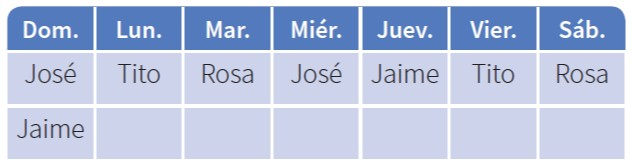

Razona lógicamente
El razonamiento lógico es muy importante al resolver
problemas, pues gracias a él podemos engarzar
los pasos y comprender las secuencias y
cadenas de razonamientos que se producen en el
desarrollo de su solución. Un ejemplo clásico es el
siguiente acertijo.
Ejemplo
José, Jaime, Tito y Rosa son guardias en un museo.
Ellos hacen guardia cuatro días a la semana.
Dos personas solamente hacen guardia cada
día. Nadie hace tres días de guardia seguidos.
¿Cuál de los tres hombres no hace guardia con
Rosa?
SOLUCIÓN
- Veamos una lista
parcial que muestra los días de
la semana en los que cada uno hace guardia:
